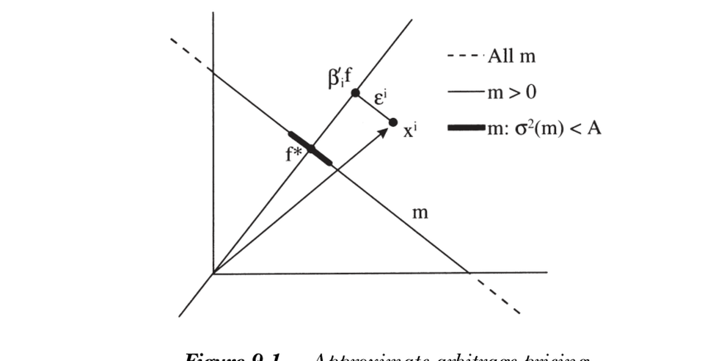

9. Factor Pricing Models
9. Factor Pricing Models
本章导读 消费模型原则上能回答几乎所有定价问题，实践中却不灵；这促使我们把贴现因子 \(m\) 系于其他数据。线性因子定价模型 \(m_{t+1}=a+b'f_{t+1}\) 是金融学中最流行的此类模型，主宰离散时间实证。本章（Cochrane 第 9 章，Part I 收官）的核心问题是：用什么作因子 \(f\)？答案是总边际效用增长的良好代理。每个推导都要完成两件事——指认因子、证明线性。§9.1 CAPM（四种推导：两期二次效用 / 指数效用+正态 / 二次值函数动态规划 / 对数效用）；§9.2 ICAPM（状态变量入因子）；§9.3 对 CAPM/ICAPM 的评论；§9.4 APT（从收益的因子结构出发，靠分散化 / 夏普比率界定价）；§9.5 APT vs ICAPM。
9. Factor Pricing Models
Overview The consumption model answers almost any pricing question in principle but fails in practice; this motivates tying the discount factor \(m\) to other data. Linear factor pricing models \(m_{t+1}=a+b'f_{t+1}\) are the most popular such models in finance and dominate discrete-time empirical work. The big question of this chapter (Cochrane Ch 9, the capstone of Part I): what to use for factors \(f\)? The answer is good proxies for aggregate marginal utility growth. Every derivation must do two things — name the factors and prove linearity. §9.1 CAPM (four derivations: two-period quadratic utility / exponential utility + normal / quadratic value-function dynamic programming / log utility); §9.2 ICAPM (state variables as factors); §9.3 comments on the CAPM and ICAPM; §9.4 APT (starting from a factor structure in returns, pricing via diversification / a Sharpe-ratio bound); §9.5 APT vs. ICAPM.
因子定价模型用一个线性模型替代消费模型的边际效用增长表达式，寻找使下式成为合理近似的变量 \(f\)：
A factor pricing model replaces the consumption model's expression for marginal utility growth with a linear model, seeking variables \(f\) for which the following is a sensible approximation:
$$\beta\,\frac{u'(c_{t+1})}{u'(c_t)}\approx a+b'f_{t+1}.\tag{9.1}$$
资产定价的本质是：存在一些"坏状态"，投资者特别在意自己的组合在那时不要表现差，愿意为此牺牲一些平均收益。因子就是指示这些坏状态已发生的变量。 任何能预测资产收益（"投资机会集的变动"）或预测宏观变量的量，都是候选因子（期限溢价、股利价格比、股票收益等）。因子是否该不可预测？大致是：若实际无风险利率恒定，则边际效用增长应不可预测（二次效用持久收入模型里"消费是随机游走"）。实际利率虽不恒定但变动不大，故代理边际效用的因子不必完全不可预测、但也不应高度可预测（否则模型反事实地预测利率剧烈变动）。实务含义是选对单位：用 GNP 增长率而非水平、用组合收益而非价格或股价比。
一个值得牢记的统一观点 / A unifying point worth remembering 所有因子模型都是消费模型的特例。 许多因子模型论文贬低消费模型，却忘了自己的模型正是"消费模型 + 允许用其他变量代理边际效用增长的额外假设"。推导都遵循同一逻辑：写下一般均衡（尤其是生产技术），导出 \(c_t=g(f_t)\)，再用它在一阶条件中替换掉消费。CAPM 与 ICAPM 都是线性技术（收益率不依赖投资量）的一般均衡模型。All factor models are specializations of the consumption-based model. Many factor-model papers disparage the consumption model, forgetting that their model is the consumption model plus extra assumptions that let one proxy for marginal utility growth with other variables. The derivations all follow one logic: write a general equilibrium (especially a production technology), derive \(c_t=g(f_t)\), and use it to substitute out consumption in the first-order conditions. The CAPM and ICAPM are general-equilibrium models with linear technologies (returns that do not depend on the quantity invested).
9.1 资本资产定价模型 (CAPM) / Capital Asset Pricing Model
The essence of asset pricing: there are special "bad states" in which investors especially want their portfolios not to do badly, and will trade off average return to ensure it. The factors are variables indicating these bad states have occurred. Any variable that forecasts returns ("shifts in the investment opportunity set") or forecasts macro variables is a candidate (term premium, dividend/price ratio, stock returns). Should factors be unpredictable? Roughly yes: with a constant real interest rate, marginal utility growth should be unpredictable ("consumption is a random walk" in the quadratic-utility permanent-income model). The real rate is not constant but varies little, so factors proxying for marginal utility need not be totally unpredictable but should not be highly predictable (else the model counterfactually predicts large interest-rate variation). The practical lesson: choose the right units — GNP growth not level, portfolio returns not prices or price/dividend ratios.
A unifying point worth remembering 见上。All factor models are specializations of the consumption-based model. Many factor-model papers disparage the consumption model, forgetting that their model is the consumption model plus extra assumptions that let one proxy for marginal utility growth with other variables. The derivations all follow one logic: write a general equilibrium (especially a production technology), derive \(c_t=g(f_t)\), and use it to substitute out consumption in the first-order conditions. The CAPM and ICAPM are general-equilibrium models with linear technologies (returns that do not depend on the quantity invested).
9.1 Capital Asset Pricing Model (CAPM)
CAPM（Sharpe 1964、Lintner 1965）把 \(m\) 系于财富组合收益 \(R^W\)：\(m_{t+1}=a+bR^W_{t+1}\)，等价于 \(E(R^i)=\gamma+\beta_{i,R^W}[E(R^W)-\gamma]\)。\(a,b\) 由"给任意两资产（如 \(R^W\) 与无风险利率）定价"确定。下面给出四种经典推导——都需找到"哪个因子代理边际效用"以及"\(m\) 与因子的线性关系"。
① 两期二次效用。 无劳动收入、二次偏好、仅活两期的投资者导出 CAPM。二次效用 \(U=-\tfrac12(c^*-c_t)^2-\tfrac12\beta E(c^*-c_{t+1})^2\) 使边际效用线性于消费（达成"线性"目标）；两期假设令二期消费 = 财富，从而用财富收益替换消费（达成"指认因子"目标）：
The CAPM (Sharpe 1964, Lintner 1965) ties \(m\) to the wealth-portfolio return \(R^W\): \(m_{t+1}=a+bR^W_{t+1}\), equivalent to \(E(R^i)=\gamma+\beta_{i,R^W}[E(R^W)-\gamma]\). \(a,b\) are pinned down by pricing any two assets (e.g. \(R^W\) and a risk-free rate). Four classic derivations follow — each must find "which factor proxies for marginal utility" and "linearity between \(m\) and the factor."
① Two-period quadratic utility. Two-period investors with no labor income and quadratic preferences imply the CAPM. Quadratic utility \(U=-\tfrac12(c^*-c_t)^2-\tfrac12\beta E(c^*-c_{t+1})^2\) makes marginal utility linear in consumption (the linearity goal); the two-period assumption sets second-period consumption = wealth, letting us substitute the wealth return for consumption (the factor-naming goal):
$$m_{t+1}=\beta\frac{c^*-c_{t+1}}{c^*-c_t}=a_t-b_t R^W_{t+1}.\tag{9.4}$$
② 指数效用 + 正态分布。 \(u(c)=-e^{-\alpha c}\)（\(\alpha\) = 绝对风险厌恶系数）加正态收益也给出 CAPM，且其线性需求曲线在不完全市场/非对称信息模型中极常用（Grossman-Stiglitz 1980）。正态下 \(Eu(c)=-e^{-\alpha E(c)+(\alpha^2/2)\sigma^2(c)}\)，对风险资产投资额 \(y\) 最大化得 \(y=\Sigma^{-1}(E(R)-R^f)/\alpha\)（投资额与财富水平无关——故称绝对而非相对风险厌恶）。反解一阶条件：
② Exponential utility + normal distributions. \(u(c)=-e^{-\alpha c}\) (\(\alpha\) = coefficient of absolute risk aversion) plus normal returns also delivers the CAPM, and its linear demand curves are widely used in incomplete-markets / asymmetric-information models (Grossman-Stiglitz 1980). Under normality \(Eu(c)=-e^{-\alpha E(c)+(\alpha^2/2)\sigma^2(c)}\); maximizing over the amount \(y\) in risky assets gives \(y=\Sigma^{-1}(E(R)-R^f)/\alpha\) (independent of wealth — hence absolute not relative risk aversion). Inverting the first-order condition:
$$E(R)-R^f=\alpha\,\operatorname{cov}(R,R^W),\qquad E(R^W)-R^f=\alpha\,\sigma^2(R^W).\tag{9.6}$$
这个版本尤其有趣，因为它把市场风险价格直接系于风险厌恶系数。
③ 二次值函数与动态规划。 两期假设令人不适——可让投资者永生，但需假设环境时间独立（i.i.d. 收益），则值函数二次，取代二期二次效用（Fama 1970）。引入定义在"本期消费 + 下期财富"上的目标 \(U=u(c_t)+\beta E_tV(W_{t+1})\)，一阶条件给出贴现因子用财富的边际价值替代消费的边际效用：\(m_{t+1}=\beta V'(W_{t+1})/u'(c_t)\)。若值函数二次 \(V(W)=-\tfrac{\eta}{2}(W-W^*)^2\)，则 \(V'\) 线性，又得 \(m_{t+1}=a_t+b_tR^W_{t+1}\)。值函数把无限期问题化为两期问题：
This version is especially interesting because it ties the market price of risk directly to the risk-aversion coefficient.
③ Quadratic value function and dynamic programming. The two-period assumption is unpalatable — but we can let investors live forever if the environment is i.i.d. over time, making the value function quadratic in place of second-period quadratic utility (Fama 1970). With an objective over current consumption and next period's wealth \(U=u(c_t)+\beta E_tV(W_{t+1})\), the first-order condition gives a discount factor using the marginal value of wealth in place of marginal utility of consumption: \(m_{t+1}=\beta V'(W_{t+1})/u'(c_t)\). If the value function is quadratic \(V(W)=-\tfrac{\eta}{2}(W-W^*)^2\), then \(V'\) is linear and again \(m_{t+1}=a_t+b_tR^W_{t+1}\). The value function turns an infinite-horizon problem into a two-period one:
$$V(W_t)=\max_{\{c_t,w_t\}}\Bigl\{u(c_t)+\beta\,\mathbb E_tV(W_{t+1})\Bigr\},\qquad W_{t+1}=R^W_{t+1}(W_t-c_t).\tag{9.8}$$
关键事实：在此环境下，二次效用导出二次值函数（用"猜二次、解两期问题、验证仍二次"的泛函方程法求得）。但"在此环境下"不容忽视——它依赖恒定利率、i.i.d. 收益、无风险劳动收入这些"表面合理实则几乎必假"的条件。两个假设各司其职：① 值函数只依赖财富 ⟹ 指认因子（其他变量进入值函数就会进入 \(m\)——这正是 ICAPM 的入口）；② 值函数二次 ⟹ 边际价值全局线性 ⟹ \(m\) 线性于因子。
④ 对数效用。 \(u(c)=\ln c\) 是更可信的特例。把财富组合定义为对全部未来消费的索取权，对数效用下其价格正比于消费本身 \(p^W_t=\tfrac{\beta}{1-\beta}c_t\)，故财富组合收益正比于消费增长，贴现因子等于财富组合收益之倒数：
The key fact: in this environment, quadratic utility yields a quadratic value function (found by the functional-equation method: guess quadratic, solve the two-period problem, verify it stays quadratic). But "in this environment" is not innocuous — it relies on constant interest rates, i.i.d. returns, no risky labor income, superficially plausible but in fact almost surely false. The two assumptions each do a job: ① the value function depends only on wealth ⟹ names the factor (other variables entering it would enter \(m\) — the door to the ICAPM); ② the value function is quadratic ⟹ globally linear marginal value ⟹ \(m\) linear in the factor.
④ Log utility. \(u(c)=\ln c\) is a more plausible special case. Define the wealth portfolio as a claim to all future consumption; under log utility its price is proportional to consumption itself, \(p^W_t=\tfrac{\beta}{1-\beta}c_t\), so the wealth-portfolio return is proportional to consumption growth and the discount factor equals the inverse of the wealth-portfolio return:
$$m_{t+1}=\frac{1}{R^W_{t+1}}.\tag{9.12}$$
对数效用是这里唯一的假设——不需恒定利率、i.i.d. 收益或无劳动收入。其特殊之处在于"收入效应抵消替代效应"（资产语境下"贴现率效应抵消现金流效应"）。
线性化任意模型。 对数 CAPM 找对了变量（\(R^W\)）却得到非线性形式。三种标准技巧把 \(m=g(f)\) 线性化为 \(m=a+bf\)：(i) Taylor 展开（在条件均值处展开）；(ii) 连续时间（扩散过程局部正态，短区间内精确线性化）；(iii) 正态分布 + Stein 引理：若 \(f,R\) 二元正态、\(g\) 可微且 \(E|g'(f)|<\infty\)，则
Log utility is the only assumption here — no constant interest rates, i.i.d. returns, or absence of labor income. Its special property is that "income effects offset substitution effects" (in asset terms, "discount-rate effects offset cashflow effects").
Linearizing any model. The log-utility CAPM got the right variable (\(R^W\)) but a nonlinear form. Three standard tricks linearize \(m=g(f)\) into \(m=a+bf\): (i) Taylor expansion (around the conditional mean); (ii) continuous time (diffusions are locally normal, exact linearization over short intervals); (iii) normal distributions + Stein's lemma: if \(f,R\) are bivariate normal, \(g\) differentiable with \(E|g'(f)|<\infty\), then
$$\operatorname{cov}[g(f),R]=E[g'(f)]\,\operatorname{cov}(f,R).$$
Stein 引理让我们把对 \(g(f)\) 的协方差换成对 \(f\) 的协方差，从而精确导出离散时间线性 \(m\) 与 \(E(R^i)=R^f+\beta_{i,f}\lambda_f\)。警示：Stein 引理不能用于对数 CAPM，因为 \(R^W\) 不可能正态分布（\(E[1/R^{W2}]\) 不存在；对数效用下消费/财富不能取非正值）。这提醒我们：连续时间近似 (9.15) 不可用于长期限或贴现股利流——\(a-bR^W\) 对 \(1/R^W\) 是越来越差的近似（前者可为负、后者不会）。Rubinstein (1976) 的本意正是提倡非线性的 \(m=1/R^W\) 作无套利多期贴现。
9.2 跨期资本资产定价模型 (ICAPM) / Intertemporal CAPM
Stein's lemma lets us swap a covariance with \(g(f)\) for a covariance with \(f\), exactly yielding a discrete-time linear \(m\) and \(E(R^i)=R^f+\beta_{i,f}\lambda_f\). A warning: Stein's lemma cannot be applied to the log-utility CAPM, because \(R^W\) cannot be normally distributed (\(E[1/R^{W2}]\) does not exist; under log utility consumption/wealth cannot be non-positive). This warns us that the continuous-time approximation (9.15) must not be applied over long horizons or to discount a dividend stream — \(a-bR^W\) is a worse and worse approximation to \(1/R^W\) (the former can go negative, the latter cannot). Rubinstein's (1976) point was actually to advocate the nonlinear \(m=1/R^W\) for arbitrage-free multiperiod discounting.
9.2 Intertemporal Capital Asset Pricing Model (ICAPM)
ICAPM 的精神 / The spirit of the ICAPM 任何"状态变量" \(z_t\) 都可作因子。ICAPM 是以财富与预测未来收益/收入分布变动的状态变量为因子的线性模型 \(m_{t+1}=a+b'f_{t+1}\)。状态变量决定投资者在其最大化中能做得多好：当前财富显然是；描述未来收益条件分布（"投资机会集变动"）的变量、以及多商品/国际模型里的相对价格也是。Any "state variable" \(z_t\) can be a factor. The ICAPM is a linear model \(m_{t+1}=a+b'f_{t+1}\) with wealth and state variables that forecast shifts in the distribution of future returns or income as factors. The state variables determine how well the investor can do in his maximization: current wealth obviously; variables describing the conditional distribution of future returns ("shifts in the investment opportunity set"); and relative prices in multi-good or international models.
由 \(c_t=g(z_t)\) 或值函数 \(V(W_{t+1},z_{t+1})\) 替换消费：\(m_{t+1}=\beta V_W(W_{t+1},z_{t+1})/V_W(W_t,z_t)\)。再线性化（Taylor / Stein / 连续时间）。在连续时间里，定义相对风险厌恶系数 \(\mathrm{rra}\equiv-WV_{WW}/V_W\)，代入基本定价方程得 ICAPM：
Substitute out consumption via \(c_t=g(z_t)\) or the value function \(V(W_{t+1},z_{t+1})\): \(m_{t+1}=\beta V_W(W_{t+1},z_{t+1})/V_W(W_t,z_t)\). Then linearize (Taylor / Stein / continuous time). In continuous time, defining the coefficient of relative risk aversion \(\mathrm{rra}\equiv-WV_{WW}/V_W\), substituting into the basic pricing equation gives the ICAPM:
$$\mathbb E_t(R^i_{t+1})-R^f_t\approx \mathrm{rra}_t\,\operatorname{cov}_t\!\left(R^i_{t+1},\tfrac{W_{t+1}}{W_t}\right)+\lambda_{z,t}\,\operatorname{cov}_t(R^i_{t+1},z_{t+1}).$$
可用财富组合的协方差替代财富的协方差，并对其他因子用因子模仿组合。Merton 组合理论的精髓在于：证明值函数依赖 \(W\) 与未来投资机会的状态变量 \(z\)，且最优组合持有市场组合加上对冲投资机会变动的对冲组合。注意：对数效用 CAPM 即便投资机会时变也成立——故 ICAPM 只在效用曲率参数不等于 1（非对数）时才起作用。
9.3 对 CAPM 与 ICAPM 的评论 / Comments
条件还是非条件？ 两期二次效用导出条件 CAPM（\(a_t,b_t\) 时变），其投资者选条件前沿上的组合，未必在非条件前沿上；多期二次效用 CAPM 仅当收益 i.i.d. 时成立（此时条件 = 非条件）。对数效用 CAPM 以倒数形式 \(1=\mathbb E_t(R_{t+1}/R^W_{t+1})\) 同时条件与非条件成立（无可变自由参数），但作出可被迅速拒绝的额外预测。
该给期权定价吗？ "CAPM 不为衍生品设计"取决于推导：二次效用与对数效用 CAPM 应给一切支付定价（Rubinstein 1976 证明对数 CAPM 导出 Black-Scholes）；但若用正态分布得线性 CAPM，则不能给（非正态的）期权定价。
为何线性化？ 这些技巧诞生于难以估计非线性模型的年代；如今 GMM 让非线性模型易于估计，故线性化已不那么重要——若非线性模型有重要预测，不必为线性而舍弃。
财富组合？ 对数推导表明"财富组合"极其宽泛：要拥有消费流的份额，得拥有所有股票、债券、房地产、私有/公有资本、乃至人力资本。故价值加权 NYSE 等常用代理是 CAPM 的拙劣辩护。
One can substitute covariance with the wealth portfolio for covariance with wealth, and use factor-mimicking portfolios for the other factors. The essence of Merton's portfolio theory is proving that the value function depends on \(W\) and the state variables \(z\) for future investment opportunities, and that the optimal portfolio holds the market plus hedge portfolios against shifts in opportunities. Note: the log-utility CAPM holds even with time-varying investment opportunities — so the ICAPM only works if the utility curvature parameter is not equal to one (non-log).
9.3 Comments on the CAPM and ICAPM
Conditional or unconditional? The two-period quadratic-utility derivation gives a conditional CAPM (\(a_t,b_t\) time-varying); its investor holds a conditional-frontier portfolio, not necessarily on the unconditional frontier. The multiperiod quadratic-utility CAPM holds only if returns are i.i.d. (then conditional = unconditional). The log-utility CAPM in inverse form \(1=\mathbb E_t(R_{t+1}/R^W_{t+1})\) holds both conditionally and unconditionally (no free parameters) but makes additional, quickly-rejected predictions.
Should it price options? "The CAPM is not designed to price derivatives" depends on the derivation: the quadratic- and log-utility CAPMs should price all payoffs (Rubinstein 1976 derives Black-Scholes from the log CAPM); but if you assume normality to get a linear CAPM, you cannot price (non-normal) options.
Why linearize? The tricks arose when nonlinear models were hard to estimate; now GMM makes them easy, so linearization matters less — if the nonlinear model has important predictions, don't lose them for linearity.
The wealth portfolio? The log derivation shows how expansive "the wealth portfolio" is: to own a share of the consumption stream you must own all stocks, bonds, real estate, private/public capital, and human capital. So the value-weighted NYSE and similar proxies are a poor defense of the CAPM.
CAPM/ICAPM 不是消费模型的替代品 / Not alternatives to the consumption model 推导表明 CAPM 与 ICAPM 是消费模型的特例而非替代：\(m_{t+1}=\beta u'(c_{t+1})/u'(c_t)\) 始终在运作，只是加了假设以用其他变量替换 \(c\)。若你认为消费模型从根本上错了，因子模型的经济依据也随之蒸发。 因子模型的"更好表现"很大程度上来自丢弃内容：对数 CAPM 预测 \(\sigma(R^W)=\sigma(\Delta c)\)（实则股票 16% vs 消费 1%），且事后逐频率地把消费与收益挂钩（"股票 12:00–1:00 上涨必因我们都吃了顿大午餐"——显然荒谬），这些含义连同对 \(\lambda\)、无风险利率、价格的预测都被惯例性地丢掉。消费模型的糟糕表现是一颗须细嚼的硬果，而非可安心绕过的死胡同。The derivations show the CAPM and ICAPM are special cases of the consumption model, not alternatives: \(m_{t+1}=\beta u'(c_{t+1})/u'(c_t)\) always operates, we just add assumptions to substitute other variables for \(c\). If you think the consumption model is fundamentally wrong, the economic justification for factor models evaporates too. Their "better performance" largely comes from throwing away content: the log CAPM predicts \(\sigma(R^W)=\sigma(\Delta c)\) (vs. stocks 16% and consumption 1%) and links consumption to returns ex post at every frequency ("if stocks rise 12:00–1:00, we all decided to have a big lunch" — silly), and these implications, along with predictions for \(\lambda\), the risk-free rate, and prices, are conventionally thrown out. The consumption model's poor performance is a nut to chew on, not a blind alley to disregard.
状态变量的身份。 ICAPM 不告诉我们 \(z_t\) 是什么，许多人借它作"捕鱼执照"（Fama 1991）。但它并非如此放任：可坚持因子模仿组合确为某可识别状态变量在收益空间的投影，可检验"投资机会状态变量确实预测了什么"。
组合直觉与衰退状态变量。 传统组合视角给出有用直觉：在组合 \(R^W\) 上加 \(\varepsilon\) 份 \(R^i\)，使组合方差增加 \(2\varepsilon\operatorname{cov}(R^W,R^i)\)——协方差（贝塔）度量边际增持 \(R^i\) 对组合方差的影响。最优时各资产成本-收益权衡相等，故平均超额收益正比于与组合的协方差。ICAPM 加入长期限与时变机会：长视野（且曲率高于对数）投资者厌恶"未来收益变低"的消息，偏好在此消息下表现好的股票（对冲再投资风险）。当今多数实证其实诉诸另一类因子：投资者有工作、有房、持小企业份额——他们偏好衰退中不跌的股票，推高其价、压低其期望收益。这类状态变量未必预测任何可交易资产收益（故非严格 ICAPM）。关键是额外因子须影响平均投资者：若某事件让 A 变差、B 变好，二者交易转移风险而不影响价格；只有平均投资者受影响才改变期望收益。故应预期许多共同变动（如行业组合）不携带风险价格。
9.4 套利定价理论 (APT) / Arbitrage Pricing Theory
Identity of state variables. The ICAPM does not tell us what \(z_t\) is, and many use it as a "fishing license" (Fama 1991). But it is not so permissive: one could insist the factor-mimicking portfolios really are projections of identifiable state variables onto returns, and check that "investment-opportunity state variables actually do forecast something."
Portfolio intuition and recession state variables. The traditional portfolio view gives useful intuition: adding \(\varepsilon\) of \(R^i\) to a portfolio \(R^W\) raises portfolio variance by \(2\varepsilon\operatorname{cov}(R^W,R^i)\) — covariance (beta) measures how a marginal increase in \(R^i\) affects portfolio variance. At the optimum each asset's cost-benefit tradeoff is equal, so mean excess returns are proportional to covariance with the portfolio. The ICAPM adds long horizons and time-varying opportunities: a long-horizon investor (curvature above log) dislikes news that future returns are lower and prefers stocks that do well on such news (hedging reinvestment risk). Most current empirical work actually appeals to another source: investors have jobs, own houses, hold shares of small businesses — they prefer stocks that don't fall in recessions, bidding up prices and down expected returns. Such state variables need not forecast any traded return (so not strictly ICAPM). Crucially the extra factor must affect the average investor: if an event makes A worse and B better, they trade to transfer risk without affecting the price; only factors affecting the average investor change expected returns. So expect many common movements (e.g. industry portfolios) that carry no risk price.
9.4 Arbitrage Pricing Theory (APT)
APT（Ross 1976）从一个统计刻画出发：收益有大的共同成分（市场涨则多数股票涨），还有行业/规模/价值等群体共动，以及完全特异的成分。直觉是：完全特异的波动不该携带风险价格，因为投资者可靠持有组合分散掉它，故期望收益应只与共同成分（"因子"）的协方差有关。任务有二：(1) 用因子分解刻画共动；(2) 论证特异成分风险价格为零。
因子结构。 因子分解 \(x^i=E(x^i)+\beta_i'\tilde f+\varepsilon^i\)，其中 \(E(\varepsilon^i)=E(\tilde f\varepsilon^i)=0\)（按回归构造）。真正的内容（使之不平凡）是假设残差互不相关 \(E(\varepsilon^i\varepsilon^j)=0\)。这等价于对协方差阵的限制：\(\operatorname{cov}(x,x')=\beta\beta'\sigma^2(f)+\text{diagonal}\)（奇异矩阵 \(\beta\beta'\) 加一个对角阵）。不知因子身份时用因子分析（协方差阵特征值分解、舍小特征值）估计。
精确因子定价（无残差）。 若 \(\varepsilon^i=0\)，则 \(x^i=E(x^i)\mathbf 1+\beta_i'\tilde f\) 说明 \(x^i\) 可由因子与无风险支付合成，故仅凭一价定律就有 \(p(x^i)=E(x^i)p(1)+\beta_i'p(\tilde f)\)，等价于
The APT (Ross 1976) starts from a statistical characterization: returns have a big common component (when the market rises, most stocks rise), plus group co-movement (industry, size, value), plus a fully idiosyncratic part. The intuition: fully idiosyncratic movements should carry no risk price, since investors diversify them away in portfolios, so expected returns should relate only to covariance with the common components ("factors"). The job is twofold: (1) a factor decomposition modeling co-movement; (2) arguing the idiosyncratic part has zero risk price.
Factor structure. The decomposition \(x^i=E(x^i)+\beta_i'\tilde f+\varepsilon^i\), with \(E(\varepsilon^i)=E(\tilde f\varepsilon^i)=0\) (by regression construction). The real content (making it non-vacuous) is assuming residuals are mutually uncorrelated, \(E(\varepsilon^i\varepsilon^j)=0\). This is a restriction on the covariance matrix: \(\operatorname{cov}(x,x')=\beta\beta'\sigma^2(f)+\text{diagonal}\) (a singular matrix plus a diagonal one). When the factors' identities are unknown, estimate via factor analysis (eigenvalue decomposition of the covariance matrix, set small eigenvalues to zero).
Exact factor pricing (no residual). If \(\varepsilon^i=0\), then \(x^i=E(x^i)\mathbf 1+\beta_i'\tilde f\) says \(x^i\) can be synthesized from the factors and a risk-free payoff, so by the law of one price alone \(p(x^i)=E(x^i)p(1)+\beta_i'p(\tilde f)\), equivalent to
$$E(R^i)=R^f+\beta_i'\lambda.$$
近似 APT（有小残差）——仅凭一价定律。 实际收益不严格满足因子结构，但残差常很小（组合回归 \(R^2\) 高）。能否说"残差小则价格不会偏离太多"？图 9.1 给出几何：因子张成一个支付空间，\(x^i\) 因 \(\varepsilon^i\ne0\) 不在其中。在因子空间内的 \(f^*\) 给因子定价、且与残差正交（零价），但所有给因子定价的 \(m\) 构成一条线，沿该线 \(m\) 与 \(\varepsilon^i\) 的内积可取 \((-\infty,\infty)\) 任意值。
Approximate APT (small residual) — law of one price only. Actual returns do not satisfy the factor structure exactly, but residuals are often small (portfolio regressions have high \(R^2\)). Can we say "small residual ⟹ price not too far off"? Figure 9.1 shows the geometry: the factors span a payoff space, and \(x^i\) is not in it (\(\varepsilon^i\ne0\)). The \(f^*\) inside the factor space prices the factors and is orthogonal to the residual (zero price), but all discount factors pricing the factors form a line, along which \(m\)'s inner product with \(\varepsilon^i\) ranges over \((-\infty,\infty)\).

图 9.1 近似套利定价。因子张成的支付空间为过原点的射线（含 \(\beta_i'f\)）；\(f^*\) 在该空间内给因子定价。给因子定价的全体贴现因子构成虚线 \(m\)；残差 \(\varepsilon^i\) 与 \(f^*\) 正交（故 \(f^*\) 给残差零价），但沿 \(m\) 线其他贴现因子给 \(\varepsilon^i\) 非零价。粗线段为受方差约束 \(\sigma^2(m)
Figure 9.1 Approximate arbitrage pricing. The factor payoff space is the ray through \(\beta_i'f\); \(f^*\) inside it prices the factors. All discount factors pricing the factors form the dashed line \(m\); the residual \(\varepsilon^i\) is orthogonal to \(f^*\) (so \(f^*\) assigns it zero price), but other discount factors on the \(m\) line assign \(\varepsilon^i\) a nonzero price. The thick segment is the \(m\)'s constrained by \(\sigma^2(m)
一价定律论证的成败 / Where the law-of-one-price argument succeeds and fails 固定 \(m\)：当 \(\operatorname{var}(\varepsilon^i)\to0\)（即 \(R^2\to1\)）时 \(p(x^i)\to p(\beta_i'f)\)；且分散良好的组合 在大市场中 \(R^2\to1\)（\(\operatorname{var}(\varepsilon_p)=\operatorname{var}(\tfrac1N\sum\varepsilon_i)\to0\)）。但"for all"与"there exists"的次序至关重要：对任意非零残差 \(\varepsilon^i\)（无论多小），都能选一个给因子定价的 \(m\)，使 \(x^i\) 取任意价格！故对固定的 \(N\) 或 \(R^2<1\)（任何实际应用），一价定律对不严格落在因子结构上的支付毫无约束。仅凭一价定律扩张定价函数到非张成支付，从根本上注定失败。Fix \(m\): as \(\operatorname{var}(\varepsilon^i)\to0\) (i.e. \(R^2\to1\)), \(p(x^i)\to p(\beta_i'f)\); and well-diversified portfolios have \(R^2\to1\) in large markets (\(\operatorname{var}(\varepsilon_p)=\operatorname{var}(\tfrac1N\sum\varepsilon_i)\to0\)). But the order of "for all" and "there exists" matters: for any nonzero residual \(\varepsilon^i\) (however small), there is a discount factor pricing the factors that assigns \(x^i\) any price in \((-\infty,\infty)\)! So for fixed \(N\) or \(R^2<1\) (any real application), the law of one price says nothing about payoffs not exactly on the factor structure. Extending the pricing function to non-spanned payoffs using the law of one price alone is fundamentally doomed.
超越一价定律：套利与夏普比率。 那些"远在外"的 \(m\) 显然"不合理"，可在不跳到完整 CAPM/消费模型的前提下排除它们。先试 \(m>0\)（无套利）：图中限于实线段，给出有限套利界——但实际中（连续分布、无严格占优组合）此界太宽无用。真正有效的是限制 \(m\) 的方差 \(\sigma^2(m)\le A\)（等价于限制因子与检验资产可达的最大夏普比率，因 \(E(R^e)/\sigma(R^e)\le\sigma(m)/E(m)\)）。求解 \(\min/\max\ p(x^i)=E(mx^i)\) s.t. \(E(mf)=p(f),m\ge0,\sigma^2(m)\le A\) 得有限价格界。Cochrane–Saá-Requejo (2000) 称之为"good-deal 定价"。
加界后 APT 极限稳健 / With the bound, the APT limit is robust 一旦限制贴现因子波动率 / 夏普比率 \(\le A\)，则当 \(\varepsilon^i\to0\)、\(R^2\to1\) 时，任何满足 \(E(mf)=p(f),m\ge0,\sigma^2(m)\le A\) 的 \(m\) 所给价格 \(p(x^i)\to p(\beta_i'f)\)——不再依赖"for all / there exists"的次序。Once discount-factor volatility / Sharpe ratio is bounded by \(A\), then as \(\varepsilon^i\to0\) and \(R^2\to1\), the price \(p(x^i)\) assigned by any \(m\) satisfying \(E(mf)=p(f),m\ge0,\sigma^2(m)\le A\) approaches \(p(\beta_i'f)\) — no longer depending on the order of "for all / there exists."
9.5 APT vs. ICAPM / APT vs. ICAPM
Beyond the law of one price: arbitrage and Sharpe ratios. Those "far out" \(m\)'s are clearly "unreasonable" and can be ruled out without jumping to a full CAPM/consumption model. First try \(m>0\) (no arbitrage): restricted to the solid segment in the figure, giving finite arbitrage bounds — but in practice (continuous distributions, no strictly dominating portfolios) these are too wide to be useful. What works is bounding the variance of \(m\), \(\sigma^2(m)\le A\) (equivalent to bounding the maximum Sharpe ratio attainable from the factors and test assets, since \(E(R^e)/\sigma(R^e)\le\sigma(m)/E(m)\)). Solving \(\min/\max\ p(x^i)=E(mx^i)\) s.t. \(E(mf)=p(f),m\ge0,\sigma^2(m)\le A\) gives finite price bounds. Cochrane and Saá-Requejo (2000) call this "good-deal pricing."
With the bound, the APT limit is robust 见上。Once discount-factor volatility / Sharpe ratio is bounded by \(A\), then as \(\varepsilon^i\to0\) and \(R^2\to1\), the price \(p(x^i)\) assigned by any \(m\) satisfying \(E(mf)=p(f),m\ge0,\sigma^2(m)\le A\) approaches \(p(\beta_i'f)\) — no longer depending on the order of "for all / there exists."
9.5 APT vs. ICAPM
因子结构 ⟹ 因子定价，但因子定价不需要因子结构 / Factor structure ⟹ factor pricing, but factor pricing needs no factor structure APT 与 ICAPM 常被混淆。因子结构可蕴含因子定价（APT），但因子定价不要求因子结构（ICAPM）。 ICAPM 中，定价模型 \(m=b'f\) 的因子 \(f\) 无需描述收益的协方差阵，无需正交或 i.i.d.；收益对因子的回归 \(R^2\) 可以很低。行业等因子可能解释收益方差的大部分，却不贡献平均收益。APT and ICAPM are often confused. Factor structure can imply factor pricing (APT), but factor pricing does not require a factor structure (ICAPM). In the ICAPM, the factors \(f\) in \(m=b'f\) need not describe the covariance matrix of returns, need not be orthogonal or i.i.d.; the \(R^2\) of returns on factors can be low. Factors like industry may describe much of returns' variance yet contribute nothing to average returns.
灵感来源不同。 这是 APT 与 ICAPM 对实证最大的区别：APT 建议从收益协方差阵的统计分析入手，找刻画共动的组合；ICAPM 建议从描述未来收益条件分布的状态变量入手，更广义地，"代理边际效用增长"指向宏观指标、尤其是非资产收入冲击的指标。这一区别在实践中影响甚微——我们只是检验 \(m=b'f\)，很少操心推导。看著名论文的引言即知：Chen-Roll-Ross (1986) 用工业生产与通胀为因子、连因子分解都不呈现，却自称 APT；Fama-French (1993) 自称因子代理状态变量的 ICAPM，但因子是按规模与账面市值比排序的资产组合、时序 \(R^2\) 全在 90% 以上、大量解释靠"共同变动"——更像 APT。
绝对定价的消失。 因子定价故事有趣之处在于：它们从一个漂亮的绝对定价模型（消费模型）出发，丢掉足够多信息，落到相对定价模型。CAPM 给定市场给 \(R^i\) 定价，却丢掉了消费模型对"市场收益从何而来"的描述。APT 是真正的相对定价模型，只声称把因子组合的价格扩张到"邻近"证券。
小结 / Summary
因子模型 \(m=a+b'f\)（等价于 \(E(R)=\gamma+\beta'\lambda\)）都是消费模型的特例，目标是为边际效用增长找一个可观测代理并论证线性。CAPM 以财富组合为因子（四种推导：两期二次效用、指数+正态、二次值函数、对数效用），ICAPM 加入预测投资机会变动的状态变量，APT 从收益的因子结构出发、靠分散化与夏普比率界（而非纯一价定律）得到近似因子定价。理论对"用什么因子、是否该线性、是否该给期权定价、条件还是非条件"往往不决定性——其中心地位更多来自长期的实证成功而非理论纯粹性。但牢记：抛弃消费模型，也就抛弃了因子模型的经济根基。
Differing inspiration for factors. This is the biggest difference for empirical work: the APT suggests starting from a statistical analysis of the covariance matrix, finding portfolios that characterize co-movement; the ICAPM suggests starting from state variables describing the conditional distribution of future returns, and more generally "proxying for marginal utility growth" points to macro indicators, especially of shocks to non-asset income. This distinction has had little impact in practice — we just test \(m=b'f\) and rarely worry about derivations. The introductions of famous papers show it: Chen-Roll-Ross (1986) use industrial production and inflation, present no factor decomposition, yet call it APT; Fama-French (1993) call theirs an ICAPM with factors proxying for state variables, but the factors are portfolios sorted on size and book/market, time-series \(R^2\) are all above 90%, and much of the explanation is "common movement" — closer to an APT.
The disappearance of absolute pricing. The factor-pricing stories are interesting because they start from a nice absolute pricing model (the consumption model), throw out enough information, and end up with relative models. The CAPM prices \(R^i\) given the market but discards the consumption model's account of where the market return came from. The APT is a true relative-pricing model, claiming only to extend the prices of factor portfolios to "nearby" securities.
Summary
Factor models \(m=a+b'f\) (equivalently \(E(R)=\gamma+\beta'\lambda\)) are all specializations of the consumption model, aiming to find an observable proxy for marginal utility growth and argue for linearity. The CAPM uses the wealth portfolio (four derivations: two-period quadratic utility, exponential + normal, quadratic value function, log utility); the ICAPM adds state variables forecasting shifts in investment opportunities; the APT starts from a factor structure in returns and reaches approximate factor pricing via diversification and a Sharpe-ratio bound (not the law of one price alone). Theory is often not decisive on which factors, whether to linearize, whether to price options, or conditional vs. unconditional — the models' central place owes more to long empirical success than theoretical purity. But remember: discarding the consumption model discards the economic foundation of factor models too.
习题 / Problems
- 设投资者只有一期视野，零期投入财富 \(W\)，仅在一期消费 \(Eu(c)=Eu(W)\)。导出此情形的二次效用 CAPM。（更简单：初始财富 \(W\) 的拉格朗日乘子取代 \(m\) 分母里的 \(u'(c_0)\)。）
- 图 9.1 似乎暗示 \(m>0\) 足以建立良好的近似 APT，正文却说不然。哪个对？
- 探究 APT。 \(R^e\) 为 \(N\) 维超额收益向量，\(R^{ef}\) 为 \(K\) 维因子组合超额收益（\(K
Problems
- Suppose the investor has a one-period horizon, invests wealth \(W\) at date 0, and consumes only at date 1 with \(Eu(c)=Eu(W)\). Derive the quadratic-utility CAPM here. (Even simpler: the Lagrange multiplier on initial wealth \(W\) replaces \(u'(c_0)\) in the denominator of \(m\).)
- Figure 9.1 suggests \(m>0\) is enough for a well-behaved approximate APT; the text claims it is not. Which is right?
- Explore the APT. \(R^e\) is an \(N\)-vector of excess returns, \(R^{ef}\) a \(K\)-vector of factor-portfolio excess returns (\(K